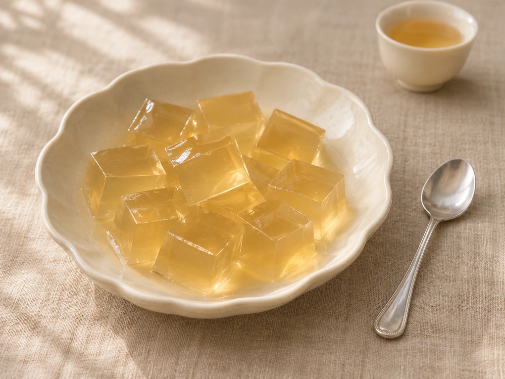

BLOOM TO TABLE
茉莉茶冻
将过滤后的花茶茶汤制成茶冻，冷藏凝固后切块，用清透口感留住一缕茶香。
花茶茶汤 · 创意甜点 · 日常做法参考
准备食材
- 按包装说明泡好并过滤的茉莉花茶茶汤 300 毫升
- 食品级琼脂粉：按其包装注明的液体配比取量
- 少量糖（可选）
制作步骤
- 冲泡成品茉莉花茶，过滤茶叶并量取 300 毫升茶汤；提前准备干净耐热的浅容器。
- 根据所用琼脂粉包装的液体配比称量。按说明要求与茶汤混合、加热并搅拌至完全溶解。
- 按口味加入少量糖，搅匀后倒入浅容器，尽快冷却。
- 待凝固后冷藏，食用前切成小块。成品密封冷藏并尽快食用；配比与凝固时间以所用产品说明为准。
选用标签清楚、来源可靠的成品茉莉花茶，按包装说明冲泡；不使用景区、绿化带或未经确认的观赏鲜花。茶冻为本站整理的日常创意做法，并非犍为独有的传统菜式。 用量可按人数与口味调整。